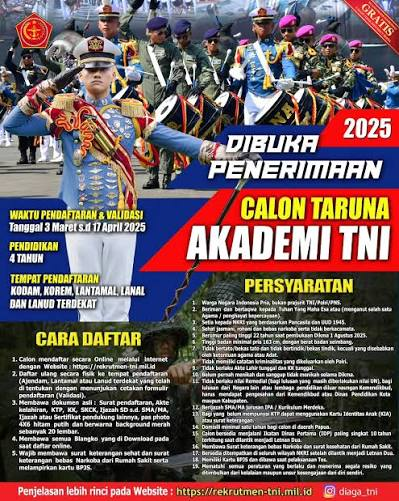

Sebanyak 154 Calon Perwira Remaja (Capaja) Akademi Angkatan Udara (AAU) resmi dilantik menjadi Perwira Pertama TNI dalam Upacara Prasetya Perwira (Praspa) TNI-Polri Tahun 2026.
Upacara tersebut dilaksanakan di Halaman Istana Merdeka, Jakarta, pada Rabu, 22 Juli 2026. Pelantikan ini menjadi salah satu tahapan penting bagi para lulusan AAU sebelum menjalankan tugas sebagai perwira TNI Angkatan Udara.
Dalam kegiatan tersebut, penghargaan Adhi Makayasa juga diberikan kepada lulusan terbaik dari masing-masing akademi. Dari AAU, penghargaan tersebut diberikan kepada Letda Pnb Yehezkiel Bonaventura Yudaniarman.
Sebelum mengikuti pelantikan, para Capaja AAU melaksanakan berbagai persiapan, termasuk pengarahan dan gladi bersih. Setelah resmi dilantik, para lulusan AAU akan memulai pengabdian sebagai perwira di lingkungan TNI Angkatan Udara.
Pelantikan tersebut menandai berakhirnya masa pendidikan mereka sebagai taruna sekaligus menjadi awal perjalanan baru dalam menjalankan tugas dan tanggung jawab sebagai seorang perwira TNI.